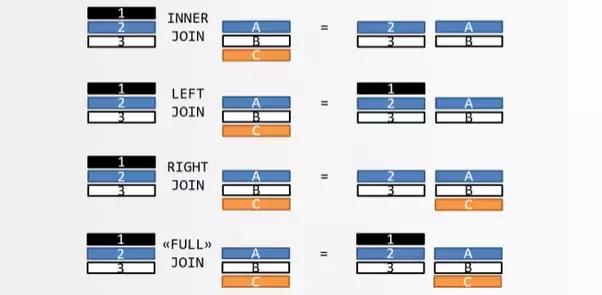
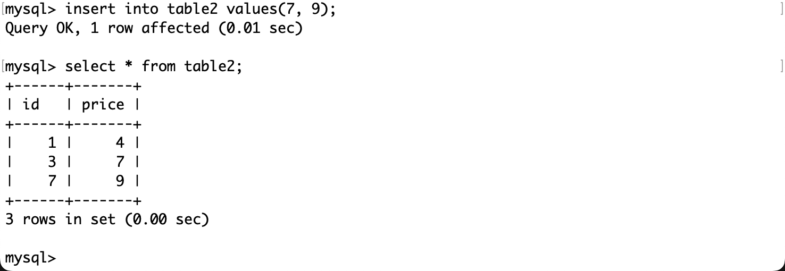
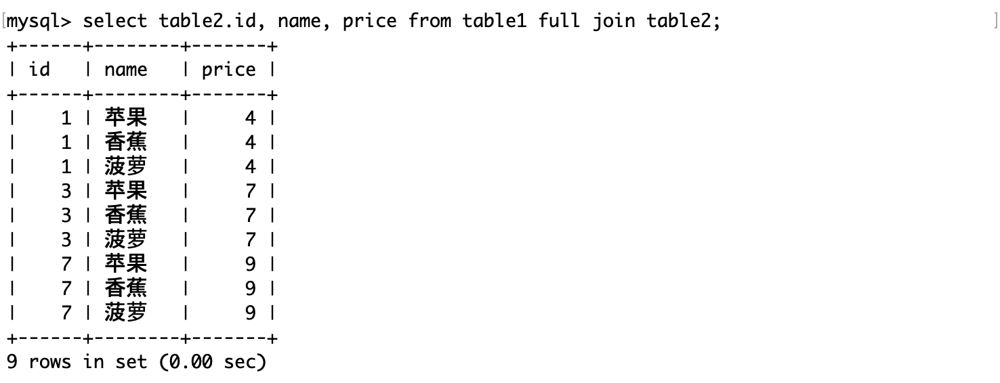

表的连接
什么是连接
数据库的连接是指在数据库系统中，两个或多个数据表之间建立的关联关系，使它们可以进行数据的交互和操作。连接通常基于某种共同的字段或条件，用于将相关数据组合在一起。
连接操作的对象是表，可以认为是对若干表的笛卡尔积的筛选操作。
连接操作通常分为以下几种：
- 内连接（Inner Join）：内连接返回两个数据表中满足连接条件的交集部分。只有当连接条件在两个表中都存在匹配时，才会返回结果。
- 外连接（Outer Join）：外连接返回连接条件满足的结果，以及其中一个表中未匹配到的行。外连接分为左外连接（Left Outer Join）、右外连接（Right Outer Join）和全外连接（Full Outer Join），具体取决于哪个表的所有行都包括在结果中。
- 自然连接（Natural Join）：自然连接是根据两个表中相同的列名自动进行连接的一种方式。它省略了连接条件，直接使用相同列名进行连接。
- 交叉连接（Cross Join）：交叉连接返回两个表的笛卡尔积，即其中一个表的每一行都与另一个表的每一行组合，不需要连接条件。
这么分的原因是不同类型的连接操作适用于不同的场景和需求。内连接用于获取两个表中匹配的数据，外连接用于获取匹配以及未匹配的数据，自然连接适用于列名相同的表，而交叉连接则用于获取两个表的所有组合。通过不同类型的连接操作，可以灵活地处理数据表之间的关联关系，满足不同的查询需求。
这四种连接不要死记硬背，试着通过图示理解（下文引用自：数据库表连接的简单解释）：
**所谓"连接"，就是两张表根据关联字段，组合成一个数据集。**问题是，两张表的关联字段的值往往是不一致的，如果关联字段不匹配，怎么处理？比如，表 A 包含张三和李四，表 B 包含李四和王五，匹配的只有李四这一条记录。
很容易看出，一共有四种处理方法。

- 只返回两张表匹配的记录，这叫内连接（inner join）。
- 返回匹配的记录，以及表 A 多余的记录，这叫左连接（left join）。
- 返回匹配的记录，以及表 B 多余的记录，这叫右连接（right join）。
- 返回匹配的记录，以及表 A 和表 B 各自的多余记录，这叫全连接（full join）。
上图中，表 A 的记录是 123，表 B 的记录是 ABC，颜色表示匹配关系。返回结果中，如果另一张表没有匹配的记录，则用 null 填充。
这四种连接，又可以分成两大类：内连接（inner join）表示只包含匹配的记录，外连接（outer join）表示还包含不匹配的记录。所以，左连接、右连接、全连接都属于外连接。
此外，还存在一种特殊的连接，叫做"交叉连接"（cross join），指的是表 A 和表 B 不存在关联字段，这时表 A（共有 n 条记录）与表 B （共有 m 条记录）连接后，会产生一张包含 n x m 条记录的新表（见下图）。

测试表

内连接
内连接（Inner Join）：内连接返回两个数据表中满足连接条件的交集部分。只有当连接条件在两个表中都存在匹配时，才会返回结果。
SELECT ... FROM t1 INNER JOIN t2 ON 连接条件 [INNER JOIN t3 ON 连接条件] ... AND 其他条件；注意：内连接的条件通过连接条件指明，用户的其他筛选条件通过其他条件指明。
- 对上表做内连接。

SQL 的构造顺序是：
- 确定要连接的表：A INNER JOIN B
- 确定连接表的条件：ON…
- 确定其他筛选条件：AND…
注意 SQL 关键字执行的顺序，SELECT 操作的对象是两表的笛卡尔积，所以查询 ID 时要指定任意一个表的 ID，因为笛卡尔积中有两列。
由于 id=2，name=香蕉这条记录在 table2 中没有相同的属性，因此它不会被作为内连接的返回值。
外连接
外连接（Outer Join）：外连接返回连接条件满足的结果，以及其中一个表中未匹配到的行。外连接分为左外连接（Left Outer Join）、右外连接（Right Outer Join）和全外连接（Full Outer Join），具体取决于哪个表的所有行都包括在结果中。
左外连接
SELECT ... FROM t1 LEFT JOIN t2 ON 连接条件 [LEFT JOIN t3 ON 连接条件] ... AND 其他条件；- 对上表做左外连接。

这意味着即使香蕉没有价格，也会将它的所有信息显示，因为香蕉存在于左表中的记录。其中左表不存在的属性，将会以 NULL 值填充。
右外连接
SELECT ... FROM t1 RIGHT JOIN t2 ON 连接条件 [RIGHT JOIN t3 ON 连接条件] ... AND 其他条件；在右表中插入一条 ID 不存在于左表的记录：
- 对上表进行右外连接。

和左外连接类似地，右外连接会将右表存在而左表不存在的记录添加到返回值中，不存在的字段依然用 NULL 值填充。
注意一个细节，在左外连接和右外连接查询 ID 时，指定的表是和连接方向对应的，这也说明了 SELECT 关键字在查找时是按照连接方向进行的。
使用 SELECT * 来获取返回值，结果也是一样的。
全外连接
SELECT ... FROM t1 FULL JOIN t2全外连接相当于对两个集合做加法，得到的是所有情况。
自然连接
自然连接是一种特殊的连接，它省略了连接条件，直接使用两个表中相同列名进行连接。
SELECT ... FROM t1 NATURAL JOIN t2;
这条 SQL 语句将会自动根据两个表中相同列名进行连接，返回结果中将包含这些相同列名的数据，并且自动过滤掉重复的列。
注意：笛卡尔积是两个表所有可能的行对组合，不考虑任何连接条件。例如，如果表 A 有 M 行，表 B 有 N 行，它们的笛卡尔积将会有 M * N 行。
自然连接避免了笛卡尔积中的大量无关组合，只返回在连接列上值匹配的行，因此结果集通常比笛卡尔积小得多。如果两个表没有列名相同的列，自然连接的结果将是一个空集，而不是笛卡尔积。
交叉连接
交叉连接返回两个表的笛卡尔积，即其中一个表的每一行都与另一个表的每一行组合。
SELECT ... FROM t1 CROSS JOIN t2;返回 table1 和 table2 的所有可能组合，即 table1 中每一行与 table2 中每一行的组合。